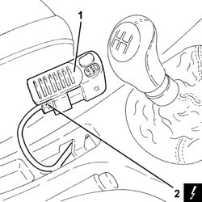

3350A10 asr disengagement switch - r r
- Path
- Procedures > 33 BRAKING SYSTEM > 3350 DRIVE CONTROL' > 3350A anti - spin regulation devices > 3350A10 asr disengagement switch - r r
- Kind
- repair procedure (removal / refitting; the operation number is the code)
- Applies to
- all engines; all production periods
- Interactive page
- https://sloeber94.github.io/elrnDB-a147/en/#/3025266
Applies to: all engines; all production periods
 Removing
Removing
 Refitting
RefittingEnsure that the ignition key is in the OFF postition, then disconnect the battery negative terminal.
 | Name | Connector |
|---|---|---|
- | Battery |
1. Remove from its seating on the centre console the embellishment with switch for switching off the A.S.R. drive control.
2. Disconnect the electrical connection from the switch for switching off the A.S.R. drive control.
| Name | Connector |
|---|---|---|
2 | Switches on tunnel |
Remove the embellishment complete with switch for switching off the A.S.R. drive control.

Applies to: all engines; all production periods
Refitting
RemovingConnect the electrical connection to the switch for switching off the A.S.R. drive control.
Refit in its seating on the centre console the embellishment complete with switch for switching off the A.S.R. drive control.
Connect the battery terminal (-).